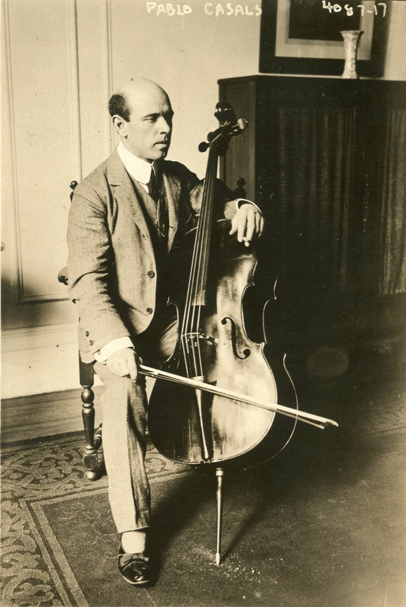

Pablo Casals

The Catalan cellist who re-founded his instrument's technique and repertoire in one career — and who, at thirteen, pulled the cello suites out of a Barcelona junk shop and spent the rest of a ninety-six-year life keeping the promise that discovery implied. His 1936–39 recordings of the six suites — grainy, vocal, rhythmically alive — remain the reference against which every later cycle defines itself, and his lifelong morning ritual (beginning every day at the piano with WTC preludes and fugues — "a benediction on the house," he called it) is the timeline's favorite image of Bach as daily practice rather than occasion.
Casals also binds the arc to history's weather: he refused to perform in Franco's Spain or, after 1933, in Germany — exile as principle — and played Bach at the United Nations in old age; the suites' gravity and his moral gravity became, in the public mind, one thing. Reception history rarely offers so clean a case of performer and repertoire dignifying each other — the eclipse-era's étude shelf transformed, by one stubborn attention, into music the twentieth century used for mourning, resistance, and dawn.